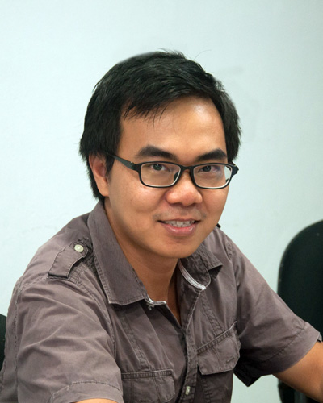

My name is Trần Trọng Thanh. I am a Front End architect and speaker, JavaScript developer, workflow improvement enthusiast, a husband and now a father, from Saigon (Ho Chi Minh city), Vietnam.
I co-founded Nau Studio and am currently its CTO. My entire career so far has been on the Front End, whether it was Flash or now Web. Currently I'm exploring the fullstack solutions based entirely on JavaScript (read NodeJS). I have a passion of making the Web a great experience for users and an enjoyable platform for developers. I am continuously looking for tools and ways to enhance development process and productivity. One of my important tasks in Nau Studio is to train Front End developers and to build up a team of elite JavaScript developers (videos of the training sessions can be found here, excuse us that we're uploading the videos a bit slowly). I was honored to be invited as speaker in several tech talks and workshops, including: TopDev Techtalk, CodeCamp's JavaScript and React workshops.
In the past, I was a senior Flash developer and joined in as a speaker of Vietnam's first Flash Camp conference. I wrote several demos and case studies in ActionScript and JavaScript which can be found in my GitHub repositories. I used to worked in Singapore for two and a half years, during which I gained my international experience in a multimedia agency and a production house. Now I am back in Vietnam, and quite busy with daily work, but I am still passionate in building a front end developers community and have a dream of bringing the JSConf to Vietnam.
This blog was created in 2008 on Blogger platform to share my experiments and discoveries during the advancement of my career. It was a bit dusty through out 2013 and 2014 during which I was drawn into too much work and other personal matters. Starting from 2015, I feel like writing again and decide to migrate it to GitHub Pages where I am free from the clutter of a CMS and can really focus on writing. Although most of Vietnamese developers can read in English, I think will write more in Vietnamese so that the things I share will be hopefully more approachable for my fellow developers.
T3
Updated {{ page.date | date:"%d/%m/%Y" }}
1: my favorite quote by Cheryl Grossman